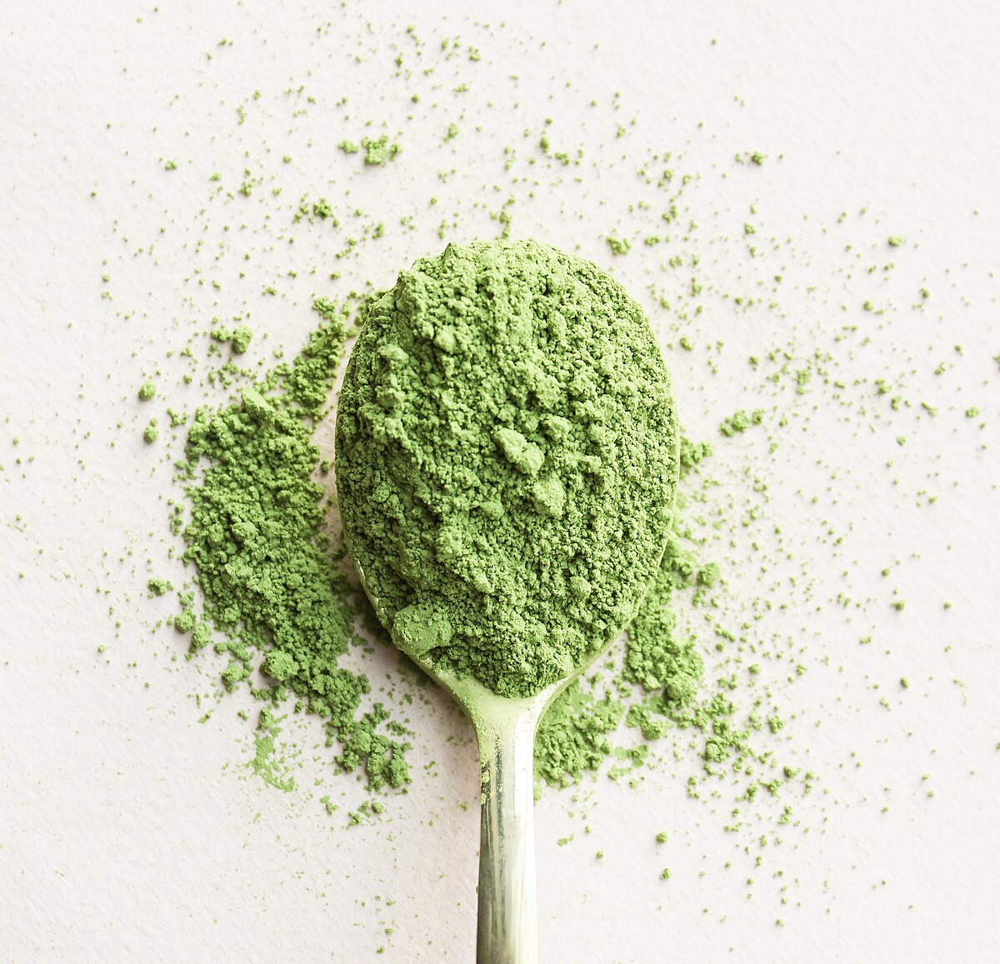
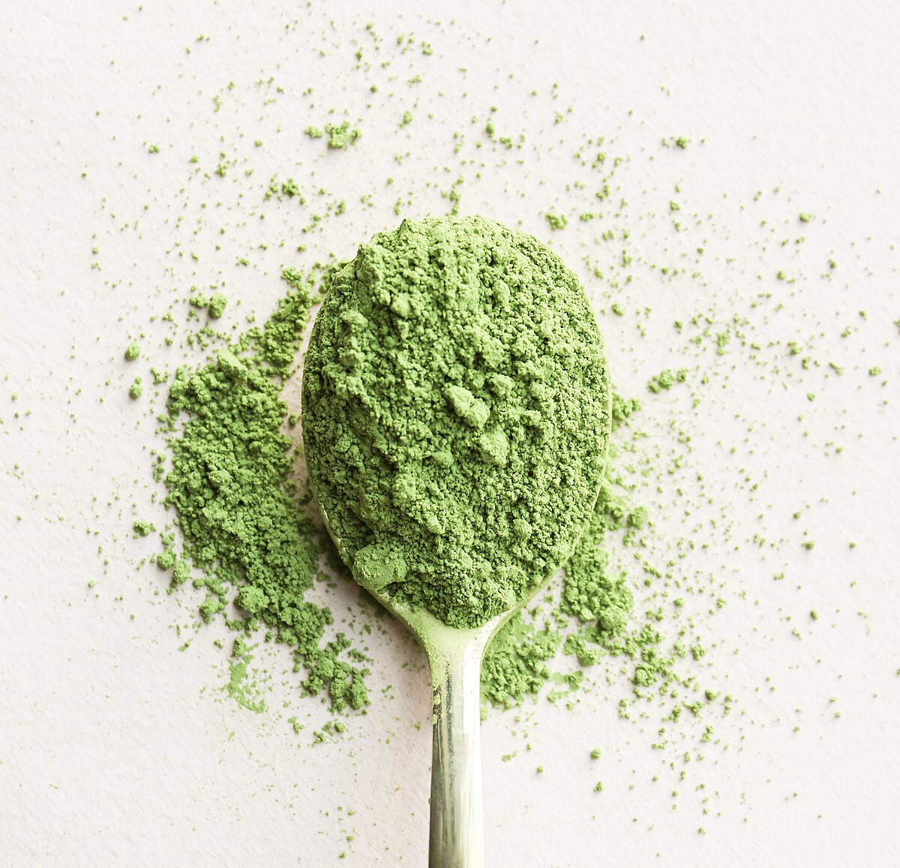

tea-r list !

 


teas i've tried: earl gray (tè dell'aviatore), english breakfast, lapsang souchong, russian blend, irish breakfast, chai hunky dory breakfast, le notti bianche, milky oolong, earl gray + jasmine (brave new earl), jasmine S tier: chai fr, lapsang souchong, matcha, jasmine tea A tier: earl gray (aviatore), earl gray + jasmine (P&T), russian blend, hunky dory breakfast B tier: le notti bianche, milky oolong C tier: irish breakfast, english breakfast D tier: F tier: hot peach tea (ew)
S tier
chai
warm, deep, silky leonard cohen? sade?
lapsang souchong
since i've been loving you - led zeppelin
matcha
roi - videoclub (matcha is pop af)
In the Mood for Love Jasmine tea (by P&T)
In The Mood for Love is a tea i've been absolutely adoring. I found it at one of my favourite tea shops (P&T) while i was in Stuttgart with my dad and, as soon as i saw its name, i knew it was destined for me. I smelled their sample, and i was mesmerized. In the Mood for Love smells like a flower field with a touch of honey. It smells like childhoods running around with friends, playing in the grass and getting your hands and trousers all green. Like a forgotten bench in the middle of a forest, grass grown all over it.
taste and preparation
- i like brewing it for ~3 mins at ~70° (they recommend 2 mins, but i'm a serial over-brewer when it comes to tea)
- you can absolutely taste the grassy undertone, but i feel like it has this honey-like quality to it that is just amazing (it is, in my opinion, both a tea that calls for honey and one that doesn't need it at all)
- it's slightly bitter, but in a pleasant, light way
music!
In the Mood for Love is light, subtle music. It's green and white music.
It's the sort of music you'd listen to on the front porch of a country house by yourself in the morning, while dawn is breaking and the sky is starting to light up (Rèverie L.68, Liz on Top of the World, Mystery of Love, Ce matin-là,, Avril 14th). It's the kind of music you'd hear in a birch or holly-wooded house with a floral teapot and white tea cups and maybe (definitely) a tree in the living room (Alone in Kyoto, Cherry Blossom Girl, I'll Be Your Mirror). But it's also the music you sway your head to, eyes closed, when you're winding down, relishing the quiet loneliness of your own home after a day of writing and re-painting the walls (The Bug Collector, Clay Pigeons, Velvet Ring, Première Gymnopédie).
In the Mood for Love is hopeful music.